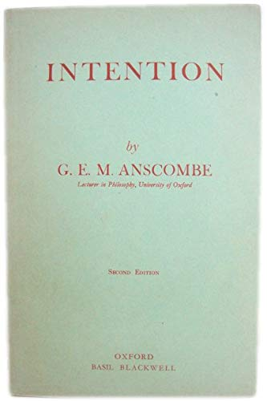

2026-10-21
Agenda
Agenda
Statements have truth conditions. Performatives have felicity conditions:
When (1) or (2) fail, we have a misfire. When (3) fails, we have an abuse.
There are two standard “explicit” forms a performative can take:
Also:
Sold!
I’ll be back.
The basic idea is that a performative verb is a verb that expresses a performative action—an action that you can perform in or by saying something:
In general, no reason to suppose that a language will contain performative verbs that can be used to express explicit performatives for every performative action.
I am sorry.
Out! (as said by an umpire)
Guilty! (as said by a juror)
A statement is just one of many kinds of performative utterance:
The cat is on the mat but I don’t believe it is.
The present King of France is bald.
A: “I am feeling crappy today.” B: “No, you are not.”
I am not cheating on you.
(Said to you by your partner who is cheating on you.)
He is not cheating on you.
(Said to you by your friend who falsely believes your partner is not cheating on you.)
He is not cheating on you.
(Said to you by your friend who falsely believes your partner is cheating on you.)
A: “Have you stopped cheating on me?”
B: “No.”
(B has never cheated on A.)
Agenda

Elizbeth Anscombe, Intention (1957), 37–38
A man is pumping water into the cistern which supplies the drinking water of a house. Someone has found a way of systematically contaminating the source with a deadly cumulative poison whose effects are unnoticeable until they can no longer be cured. The house is regularly inhabited by a small group of party chiefs, with their immediate families, who are in control of a great state ; they are engaged in exterminating the Jews and perhaps plan a world war.—The man who contaminated the source has calculated that if these people are destroyed some good men will get into power who will govern well, or even institute the Kingdom of Heaven on earth and secure a good life for all the people ; and he has revealed the calculation, together with the fact about the poison, to the man who is pumping. The death of the inhabitants of the house will, of course, have all sorts of other effects; e.g., that a number of people unknown to these men will receive legacies, about which they know nothing.
This man’s arm is going up and down, up and down. Certain muscles, with Latin names which doctors know, are contracting and relaxing. Certain substances are getting generated in some nerve fibres-substances whose generation in the course of voluntary movement interests physiologists. The moving arm is casting a shadow on a rockery where at one place and from one position it produces a curious effect as if a face were looking out of the rockery. Further, the pump makes a series of clicking noises, which are in fact beating out a noticeable rhythm.
| “Don’t push that button!” | |
|---|---|
| Locutionary Act | ? |
| Illocutionary Act | ? |
| Perlocutionary Act | ? |
| “Shoot her!” | |
|---|---|
| Locutionary Act | ? |
| Illocutionary Act | ? |
| Perlocutionary Act | ? |
| “You can’t do that!” | |
|---|---|
| Locutionary Act | ? |
| Illocutionary Act | ? |
| Perlocutionary Act | ? |
| “That milk has gone off.” | |
|---|---|
| Locutionary Act | ? |
| Illocutionary Act | ? |
| Perlocutionary Act | ? |
Let’s use the tools from Grice and Austin to analyze: